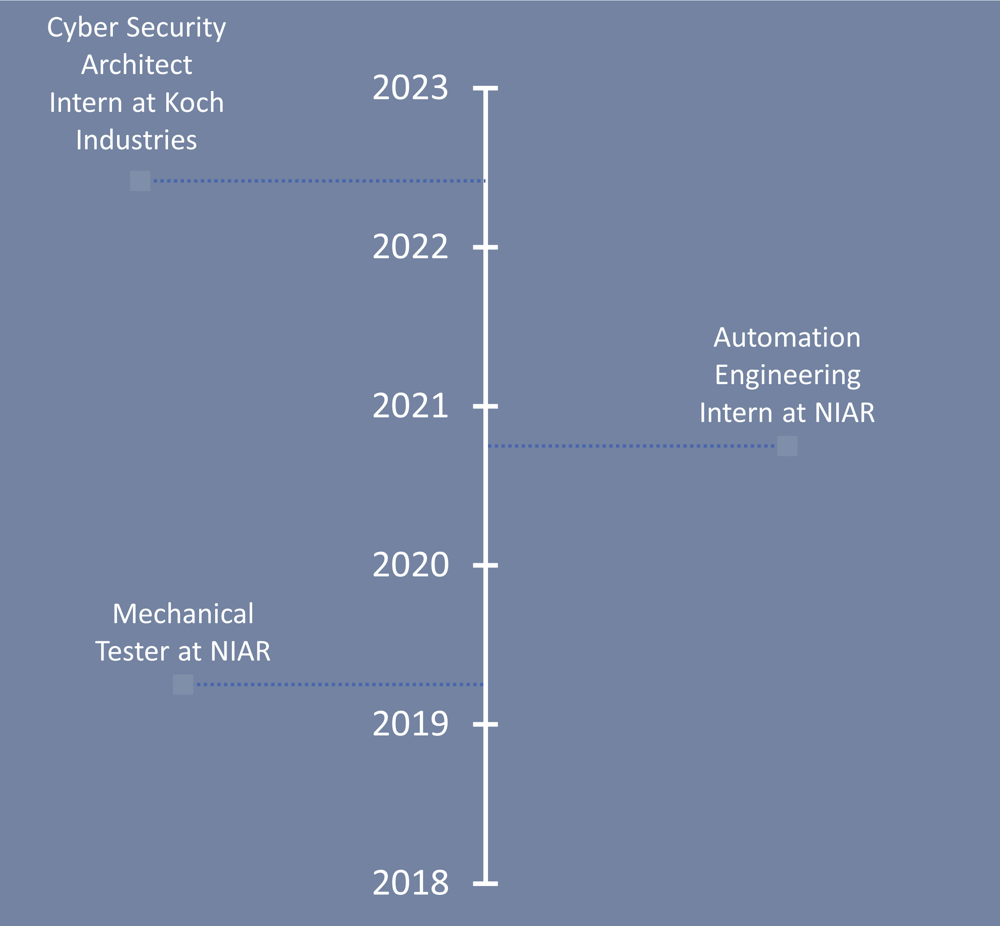
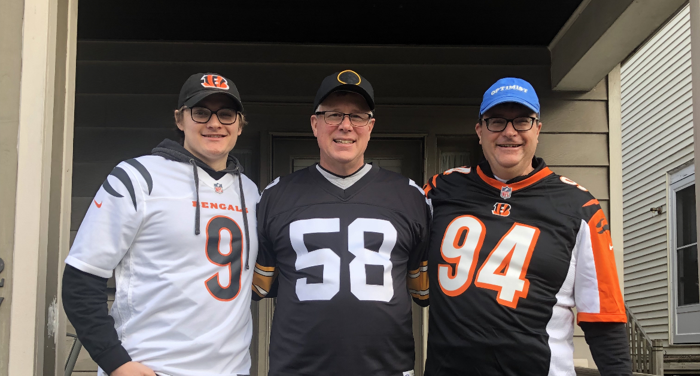

Intro
Hello there, and welcome to my Portfolio.
I am currently a student stuyding Cyber Security at Wichita State University planning to graduate in the Fall of 2022.
Please check out the other sections to learn more about me, my skills and various things that I have worked on.
Thank you for stopping by, and hopefully you may learn ways that I can be of service to you.
Work

My first real job experience came my freshman year of college working at the National Institute for Aviation Research. In the Spring of 2019, I began as a mechanical tester of Composite Laminate Specimens utilizing test methods provided by ASTM. I worked on projects for companies such as Spirit Aerosystems, Boeing, NASA, and more.
After about 18 months as a tester, an opportunity arose for me to transition groups to learn automation. This transition was extremely formative for me as I learned to use industry-standard automation equipment like Siemens Programmable Logic Controllers as well as Kuka robots. I was also exposed to and worked with various aircraft composite inspection methods such as Thermography, Shearography and Laser Paint Removal. Rapid prototyping and developent, leadership, task dissemination, teamwork, and maintaining professional relationships with our vendors were crucial skills I learned on top of my technical training.
While in this position I was regarded highly on my project team, facilitating meetings with vendors and being given the opportunity to travel to Corpus Christi Texas to assist in installing our project. However, after 21 months on the project, I decided that it was time for me to further my Cyber Security Career, and left to pursue an internship at Koch Industries as a Cyber Security Architect Inter. I am grateful for the time I spent at NIAR and the relationships I was able to create with some of the fantastic people there.
About

I was born and raised in Wichita, but have family both there and in Cincinnati. I attended Kapaun Mount Carmel High School as part of the Class of 2018, and during that time stayed active mostly with sports. I played football all four years, and was a Team Captain my senior year.
Though I graduate with a Bachelors of Science in Cyber Security from Wichita State University in the Fall of 2022, my studies have been multidisciplinary. I have recieved a minor in Psycology from Wichita State, as well as Certificates in Data and Web Security, Cyber-Physical Systems, and Human Factors in Cybersecurity. Some important coursework for me has been both Calculus I and II, Discrete Math I, Web Application Security, Digital Forensics, Cyber-Physical Systems, both Social and Cognitive Psychology, and Cyber Risk Management.
At Wichita State I was part of the fraternity Sigma Alpha Epsilon, and the experiences I shared with those guys were wonderful. I held executive positions as the Recruitment Chairman, the Member Edcuator, and the Health and Safety Chairman. On top of that, I was the Chapter Delegate to our biennial Nationwide Convention, held in Louisville, Kentucky in the Summer of 2019.
Within the next few months, my breadth of knowledge of the cybersecurity field will grow due to the beginning of an internship with Koch Industries, just up the road from my childhood home.